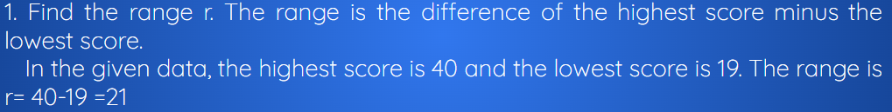
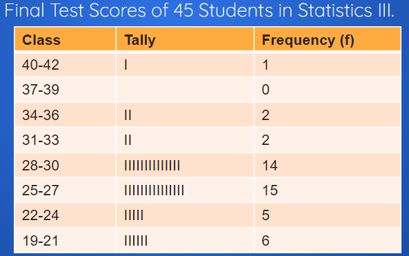
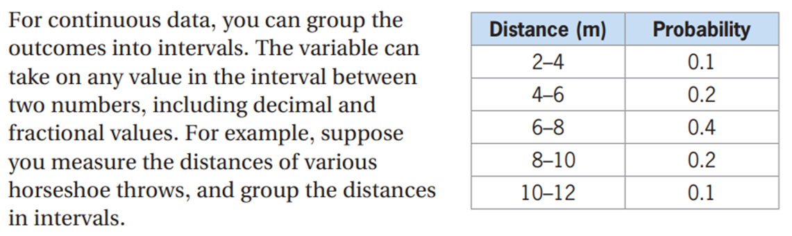
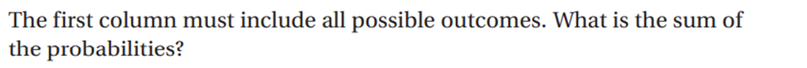
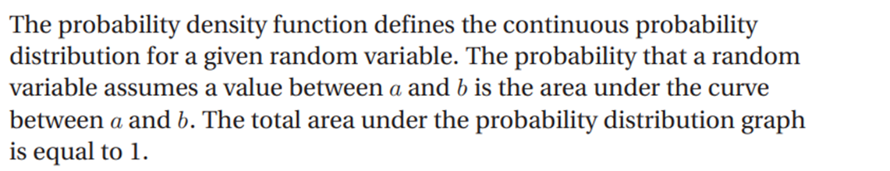
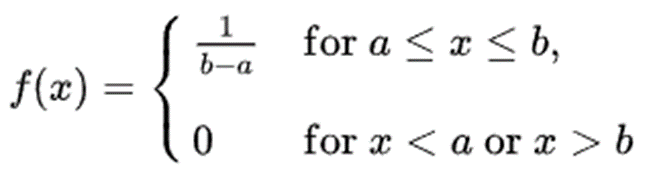
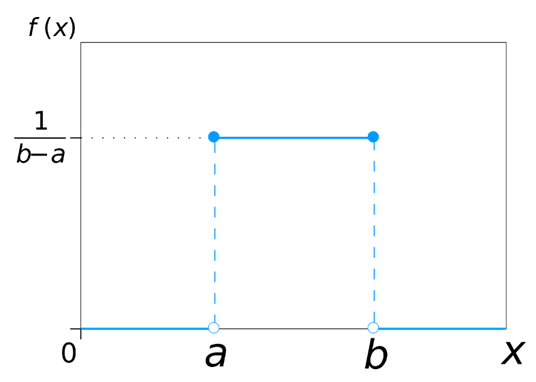

Continuous Random Variables
In statistics, numerical information may be treated as ungrouped or grouped data. In both cases, tabular presentation is very important. This tabular presentation of data is called the frequency distribution table.
Consider the final test scores of 45 students in Statistics III.
29 27 28 27 34 29 27 27 28
25 23 35 25 29 33 23 27 33
27 22 40 27 21 29 22 25 29
25 21 20 21 23 25 30 20 28
30 29 28 30 27 27 27 19 30
The table shows the tabulation of the 45 scores treated as ungrouped data. The tally for each score is also indicated.
Final Test Scores of 45 Students In Statistics III.
|
Score |
Tally |
Frequency |
|
40 |
I |
1 |
|
35 |
I |
1 |
|
34 |
I |
1 |
|
33 |
II |
2 |
|
30 |
IIII |
4 |
|
29 |
IIIIII |
6 |
|
28 |
IIII |
4 |
|
27 |
IIIIIIIIII |
10 |
|
25 |
IIIII |
5 |
|
23 |
III |
3 |
|
22 |
II |
2 |
|
21 |
III |
3 |
|
20 |
II |
2 |
|
19 |
I |
1 |
The scores may be tabulated as grouped data. Usually, data in great numbers are presented in a frequency distribution table.
Here are the steps in constructing distribution tables:


Histogram
A bar graph-like representation of a frequency distribution. The rectangular bars are without space between them. The height of each bar corresponds to the frequency of the class and the width corresponds to the the interval of the class. For clarity, only the class marks are indicated along the horizontal axis. The histogram that follows represents the frequency distribution for the finals of 45 students in Statistics.

Frequency Polygon
A line graph where the frequency of each class is plotted against the corresponding class mark. If a histogram is already in place, simply connect the midpoints of the rectangular bar tops.

Continuous Random Variables



Continuous Uniform Distribution
Continuous uniform distribution (rectangular distribution): Describes an experiment where there is an arbitrary outcome that lies between certain bounds.

